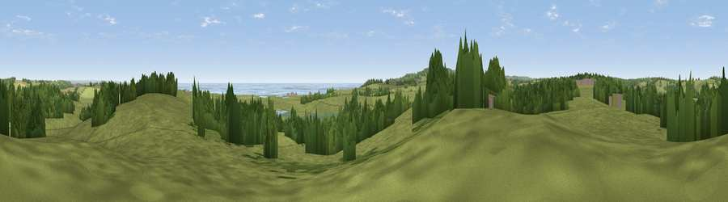

Viewpoint near Icklesham
#17768 in England · top 15% of its area beats it · near IckleshamWhere it is
The exact computed spot (TQ 88725 16025). Click the marker for map links.
The view, rendered

A 360° render of this exact spot computed from the terrain model, tree cover and land cover — summer colours, afternoon light, calibrated against photographs of famous viewpoints. Real trees, hedges and buildings will differ in detail.
The panorama
Grey silhouette: terrain skyline in each direction (720 bearings, Earth curvature and refraction included). Dashed green: skyline with trees (+15 m) and buildings (+8 m) as obstacles. Blue strip: how far the ground is visible on each bearing.
Where the view opens
Wedge length = distance to the farthest visible ground on that bearing (vegetation-aware). Rings at 10, 25 and 50 km.
What fills the view
65% grassland · 23% woodland · 5% water · 4% wetland · 2% cropland ·
Angular shares of the visible panorama (visual magnitude), not map area. Landscape diversity 0.45 (0–1 Shannon).
Key numbers
More beautiful places nearby
The staircase of upgrades: each row has a higher view potential than everything closer. Driving times are estimates from straight-line distance, calibrated against real road routing — check an actual route before setting out.
| Place | Direction | Drive | Score |
|---|---|---|---|
| Viewpoint near Winchelsea | E · 1 km | ~2 min | 58.9 |
| Viewpoint near Udimore | N · 3 km | ~8 min | 59.7 |
| Viewpoint near Fairlight | SSW · 5 km | ~10 min | 75.1 |
| Viewpoint near Fairlight | SSW · 5 km | ~11 min | 78.2 |
| Viewpoint near Fairlight | SSW · 5 km | ~12 min | 79.0 |
| Viewpoint near Willingdon | WSW · 34 km | ~52 min | 81.5 |
| Viewpoint near Willingdon | WSW · 34 km | ~52 min | 83.4 |
| Wilmington Hill | WSW · 36 km | ~55 min | 85.4 |
50.91283, 0.68328 · source: screening · position refined by local search. Computed location — check access rights before visiting.